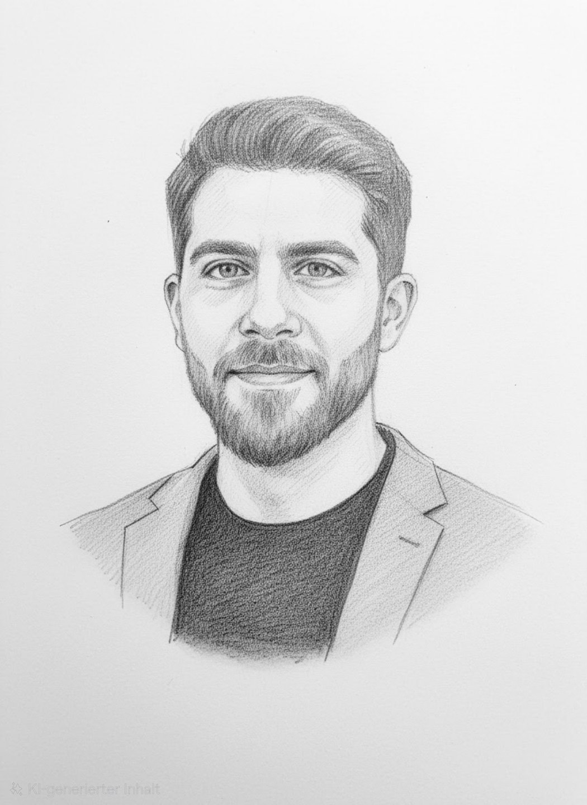

Über DoytschlandTv
Nachrichten, Einordnung und Haltung. Fakt und Meinung getrennt.

Wer dahintersteckt
Ich bin Enkel eines türkischen Gastarbeiters.
Mein Erbe
Mein Großvater kam Ende der 1960er Jahre mit einem Koffer nach Deutschland. Er brachte darin mehr mit als Kleidung: Tradition, Kultur und Werte wie Pflicht und Verantwortung. Dieses Erbe trage ich bis heute mit.
Ich bin in Deutschland geboren und trage mehrere Welten in mir: deutsche Sprache und deutschen Pass, anatolische Wurzeln, ein Erbe, das ich nicht ablege. Diese Vielfalt ist für mich kein Widerspruch, sondern der Grund, warum ich genau hinsehe. Ich habe erlebt, wie schnell aus einem Bild über eine Gruppe ein Urteil über den Einzelnen wird.
Warum „Doytsch“?
Mein Großvater hat „deutsch“ immer genau so ausgesprochen, wie es hier geschrieben steht: Doytsch. Daher kommt der Name. Ich bin Deutscher, aber eben deutsch mit Y. Das steht für mich für eine neue Identität des Deutschseins.
Warum DoytschlandTv?
Heute sehe ich dasselbe Muster im Netz, nur lauter: Ungeprüftes wird geteilt, aus Einzelfällen werden Feindbilder, und ganze Gruppen müssen sich für das erklären, was andere getan haben. Gleichzeitig trauen viele den großen Medien nicht mehr. Beides nehme ich nicht hin.
Hier sind Fakt und Meinung getrennt, jede Quelle liegt offen, und es geht um die Sache, nicht um Personen. Als Kind einer Migrantenfamilie wirst du früh zum Vertreter für alle möglichen Themen und baust ständig Brücken zwischen der Gesellschaft und der Community, aus der du kommst. Menschen mit türkischem Hintergrund sind dabei keine einheitliche Gruppe. Diese Erfahrung bringe ich ein, und die Plattform ist offen für alle, die genau hinsehen wollen.
DoytschlandTv ist frei und eigenfinanziert. Ich mache das aus eigener Überzeugung, um der Gesellschaft einen Mehrwert zu geben. Weitere Ideen wie ein Videoformat oder ein Podcast liegen schon bereit.
Zu mir
Beruflich komme ich aus der Bankwelt: Ich habe dual studiert, in verschiedenen Banken gearbeitet und bin heute Führungskraft in einer Bank. Dort prüfe ich täglich Aussagen und bewerte Quellen. Mein Master in Wirtschaft, Medien und Psychologie, kurz Wirtschaftspsychologie, hat meinen Blick dafür geschärft, warum Menschen Dinge glauben und weiterleiten, ohne sie zu prüfen, und wie man vielfältige Gruppen führt. Als Gastdozent unterrichte ich Wirtschaftspsychologie.
Wer eine Stimme hat, trägt Verantwortung, sie zu nutzen.
Stimme und Haltung
Das Morning Briefing erscheint als Karussell und als Text. Audio-Versionen sind zurzeit pausiert. Sobald es sie wieder gibt, ist die Stimme KI-generiert, nach meiner eigenen Stimme geklont. Für die Inhalte und ihre Veröffentlichung trage ich die Verantwortung.
DoytschlandTv ist ein persönliches Projekt mit einem klaren redaktionellen Anspruch: Ich kritisiere Positionen und Entscheidungen, nicht Menschen aufgrund ihrer Herkunft oder Zugehörigkeit. Fakten, Einordnung und Meinung halte ich auseinander. Meine eigene Haltung mache ich kenntlich, damit du nachvollziehen kannst, was belegt ist, wie ich Zusammenhänge einordne und zu welchem Urteil ich komme.
Täglich das Wichtigste
Ein Morning Briefing als Karussell und zum Lesen, dazu Karussells und Storys zu aktuellen Themen mit Deutschlandbezug. Zur Vertiefung gibt es Kolumnen, Dossiers und Erklärstücke.
Einfach und überzeugend
Wenige Slides, eine klare Aussage. Gestaltet, damit man es gern liest und teilt.
Mit Haltung und Quellen
Eigene Texte und Bilder. Fakten werden belegt, Meinung wird als Meinung gekennzeichnet.
Unsere Grundsätze
Wofür wir stehen, woran wir uns messen lassen und wie wir mit Quellen und Fehlern umgehen. Grundsätze lesen ›
Kontakt
Fehler gefunden, Hinweis oder Themenvorschlag? Schreib uns an doytschlandtv@gmail.com oder schick eine Nachricht auf Instagram oder TikTok.